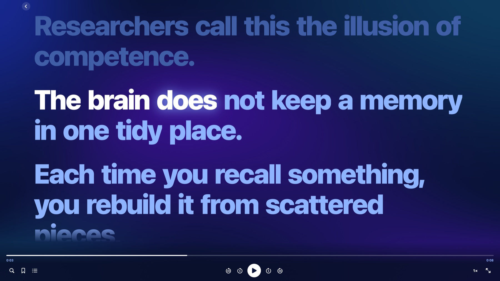
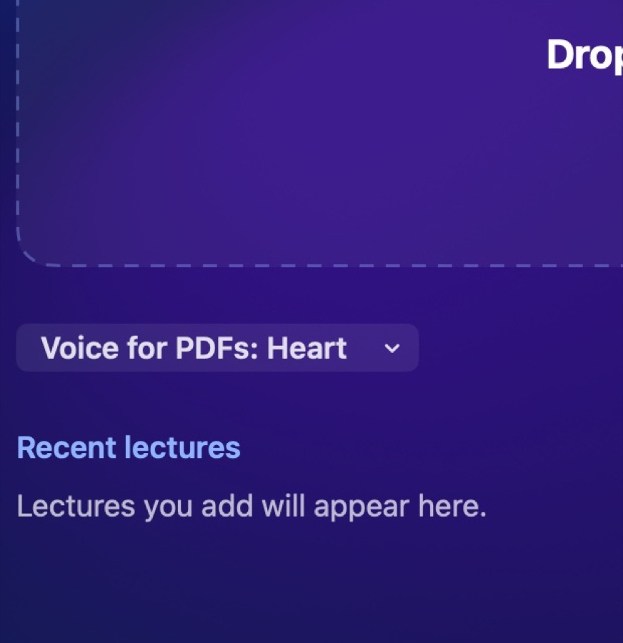
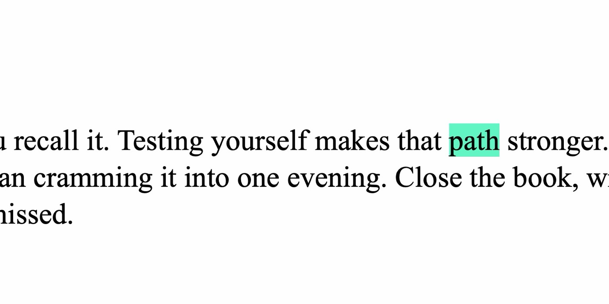
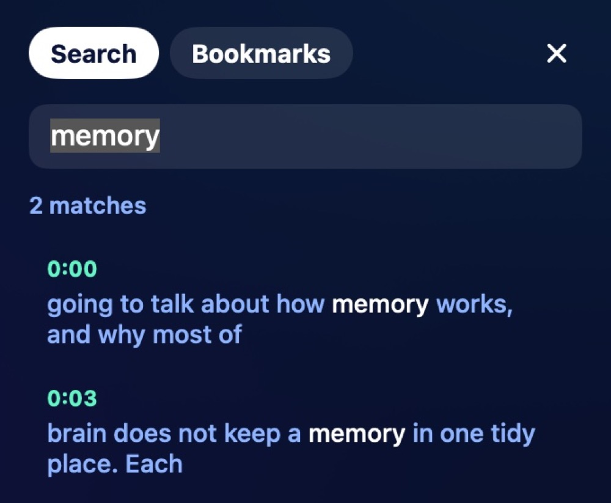
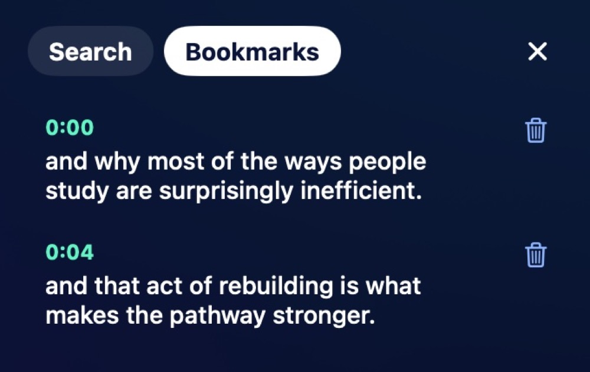

Made for studying
Nothing leaves your Mac
Transcripts and speech are made on your computer, not on a server.
Natural voices take time
On an M5 with 16 GB, 15 dense pages took about 8.5 minutes to prepare. Read something else while you wait.

Captions that fill the screen
Drop in an MP3, M4A or WAV. The words follow the sound in huge type, and you can click any of them.
Skip with the arrow keys
5 seconds with the arrows, 30 with Shift held down. Space plays and pauses.

Voices with real flow
Heart, Bella, Michael and Emma download once, then work offline. Apple's voices work too.

PDFs, read on the real page
Each word lights up on the page itself as it's spoken. Click a word to jump there. Scanned PDFs can't be read yet.

Search every word
Find where something was said, and go straight there.

Bookmark the good parts
Press B to save a moment and come back to it later.
Your download has started. If it didn't, download it again.
Installed in about a minute
-
Seconds
First, download it and open the file.
-
Seconds
Next, drag Podcast Reader into Applications.
-
About a minute
Then open it. macOS stops it the first time, because this free app isn't signed with a paid Apple Developer ID. Go to System Settings, then Privacy & Security, scroll down and click Open Anyway. You only do this once.
-
A few minutes, if you want it
Last, for a natural voice, choose Kokoro Heart under Voice for PDFs. The app asks first, then downloads about 1.3 GB, once. There's nothing else to install.